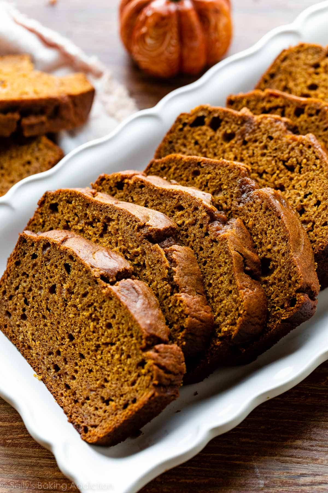

Pumpkin Bread

Description
Pumpkin bread is an easy fall staple—with or without chocolate chips.
Ingredients
- 219g all purpose flour
- 1 teaspoon baking powder
- 2 teaspoons ground cinnamon
- 1/4 teaspoon ground all-spice
- 1/4 teaspoon ground cloves
- 1/4 teaspoon ground ginger
- 3/4 teaspoon salt
- 2 large eggs
- 100g granulated sugar
- 150g dark brown sugar
- 340g pumpkin puree
- 1/2 cup canola oil
- 1/4 milk or orange juice
- 120g semi-sweet chocolate chips (optional)
Steps
- Preheat oven to 350 degrees F. Grease a metal 9x5 loaf pan with non-stick spray. Set aside for now.
- In a large bowl, whisk the flour, baking soda, cinnamon, all-spice, cloves, ginger, and salt together until combined. Set aside for now.
- In a medium bowl, whisk eggs, granulated sugar, and brown sugar together until combined. Whisk in the pumpkin puree, oil, and milk or orange juice.
- Pour these wet ingridients into the dry ingredients and gently mix together using a rubber spatula or wooden spoon. There will be a few lumps: do not overmix.
- Gently fold in chocolate chips, if including.
- Pour the batter into the prepared loaf pan. Bake for 60-65 minutes, making sure to loosely cover the bread with aluminum foil halfway to prevent the top from getting too brown. The bread is down when a toothpick inserted in the center comes out clean with only a few crumbs.
- Allow bread to cool completely in the pan on a wirerack before removing and slicing.
- Cover and store leftover pumpkin bread at room temperature for up to 3-4 days or in the refrigerator for up to a week.
Notes
- Make ahead tip: baked pumpkin break can be frozen for up to three months. Thaw overnight in the refrigerator and bring to room temperature before serving.
- Blot your pumpkin puree: whether canned or fresh, pumpkin puree has a lot of liquid content. In order to make a non-soggy loaf, measure your puree into a small bowl and blot with a paper towel gently to remove moisture before adding to batter.